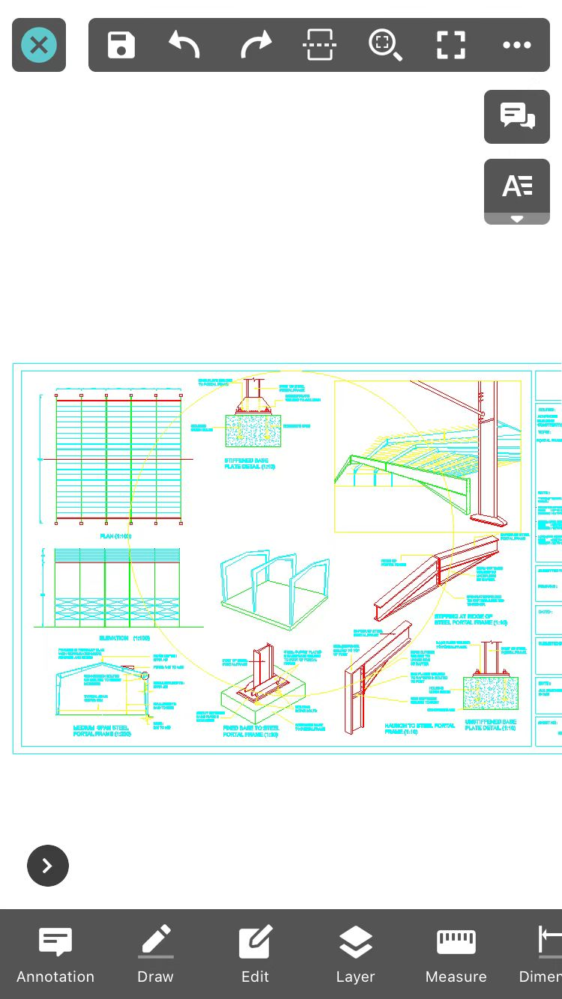

Exit: Exit.
Save: Save or save as current drawing.
Undo: Cancel last operation.
Redo: Restore the effect of previous canceled step of “Undo” command.
Multiple DWG View: View two drawings at one time.
Full Drawing: Display full drawing.
Full View: Display in full creen.
More: tap to display more information, such as Switch to View Mode, File Information, Export, Help, Download Annotation Resource, Hide annotations, Regen, and Settings.
Insert Useful Words: This function is used to insert useful words to the current drawing conveniently.
Quick command: Display recent used commands. Tapping on the command icon could start it immediately. It is default to display quick commands, and it could be hidden by changing it in settings. Long pressing on the command icon could fix its position on the right. Long Pressing on the fixed command could remove it from fixed position.
Annotation: including Sketch, Arrow, Text, Revcloud, Recording, Image, Video, Leader, Line, Rectangle, Ellipse, Number.
Draw: it displays ten kinds of objects to draw: Polyline, Line, Text, Circle, Arc, Rectangle, Ellipse, Sketch, Smart Pen, Multileader, Revcloud, andDivide .
Edit: It provides Trim, Extend, Offset, Fillet, and Chamfer.
Layer: It provides New Layer, Layer List, Layer off, Off Other layers, Layer Previous, Turn All Layers On, and Make Layer Current.
Measure: Including Distance, Continuous, Area, Lateral Area, ID Point, Arc length, Entity, Angle, Scale, Result, Statistic Result, and Precision.
Dimension: It Provides Aligned Dimesion, Linear Dimension, Angular Dimension,Radius Dimension, Diameter Dimension, Arc Length Dimension, and Arc Length by 3 points Dimension.
Color: It displays seven kinds of color. You can change the color of the brush.
Tool: It provides Find, Incremental Copy, Count Block, Insert Block, and Bookmark functions.
Layout : you can switch between model space and layout space freely.
Visual Style: It provides 2D and 3D visual styles.